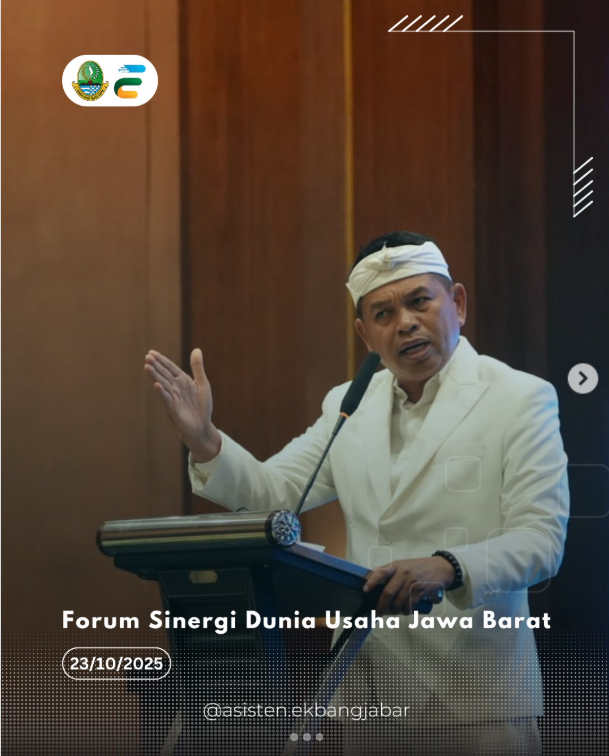

BERITA TERKINI !!!
Asisten Daerah Perekonomian dan Pembangunan Provinsi Jawa Barat, H. Sumasna, bersama Disnakertrans Provinsi Jawa Barat mendampingi Gubernur Jawa Barat menghadiri , Forum Sinergi Dunia Usaha Jawa Barat bertempat di eL Hotel Bandung.  Adapun acara yang digelar oleh Asosiasi Pengusaha Indonesia (APINDO) ini, dibuka dengan kegiatan “Bedah Formulasi Upah” yang menghadirkan para akademisi dan pakar ketenagakerjaan untuk membahas formulasi pengupahan yang adil dan berdaya saing, sebagai tindak lanjut atas gagasan Bapak terkait sistem pengupahan UMP dan UMSP.
Selain itu, dengan kolaborasi APINDO Jawa Barat dan Komite Pemantauan Pelaksanaan Otonomi Daerah (KPPOD) dalam kesempatan ini, mengulas dampak kebijakan pemotongan anggaran ke daerah terhadap iklim investasi dan dunia usaha di Jabar, Kamis (23/10).